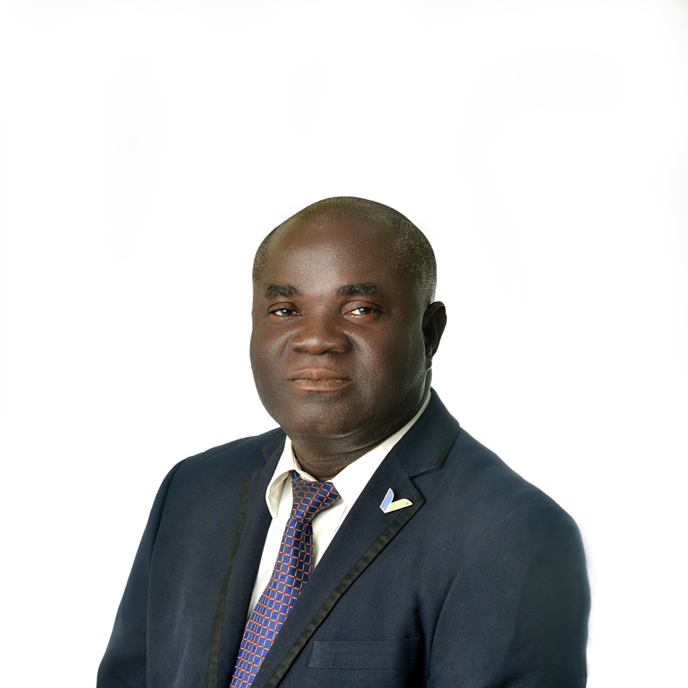

GET TO KNOW ME
About Me
A professional journey shaped by accounting, audit, leadership and continuous learning.

Biography
Olusegun Sunday Olakunle is an accomplished accounting professional and graduate of Accounting from Yaba College of Technology and the University of Lagos. He also holds a Master of Science (M.Sc.) in Accounting from the University of Lagos. He is a Fellow of the Institute of Chartered Accountants of Nigeria (ICAN) and a member of the Chartered Institute of Internal Auditors of Nigeria.
He currently serves as the Internal Auditor of Veritas Glanvills Pensions Limited, where he has contributed to aligning the organisation's core units with its strategic objectives. His career has included roles in assurance, accounting, lecturing and internal audit.
With over 25 years of professional experience, his core competencies include accounting, auditing, taxation, strategic management, administration and problem-solving.
Education & qualifications
- Associate Member, Chartered Institute of Internal Auditors
- Fellow, Certified Pension Institute of Nigeria
- M.Sc. Accounting, University of Lagos
- B.Sc. Accounting, University of Lagos
- OND and HND Accounting, Yaba College of Technology
- SSCE, Morocco Comprehensive High School
- CIA, FCA and other professional qualifications as stated in the project brief
Career aspirations
Olusegun is an ambitious researcher and consultant. He is the chairman of Constellation Academy and other consulting outfits. He is also aspiring to develop further in systems engineering to enhance his consulting activities.
Technical & professional skills
Accounting, auditing, taxation, strategic management, administration, problem-solving and research.
Hobbies & interests
Reading, table tennis and researching.